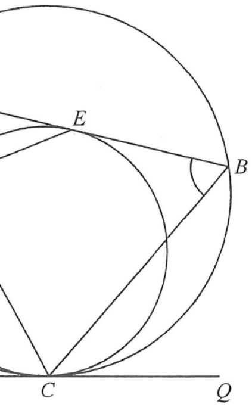

HKDSE 2020 · P2 Q39Two Circles with Common Tangent at C
Circle ABCCircle CDEChords / tangentsPointsHighlighted angle
In the figure, $ABC$ and $CDE$ are circles such that $ADC$ is a straight line.
$PQ$ is the common tangent to the two circles at $C$.
$AB$ is the tangent to the circle $CDE$ at $E$.
If $\angle ADE = 100^\circ$ and $\angle BCQ = 35^\circ$, then $\angle ABC =$
A. 55° B. 65° C. 70° D. 80°

Figure (original exam diagram)
Step 1 · Angles on a straight line
Adjacent Angles on a Straight Line\(\angle ADC=180^{\circ}\ \Longrightarrow\ \angle CDE=180^{\circ}-\angle ADE\)Here \(\angle CDE=180^{\circ}-100^{\circ}=80^{\circ}\).
$A$, $D$, $C$ lie on a straight line, so $\angle ADC = 180^\circ$.
Angle in the Alternate Segment\(\text{angle between tangent and chord}=\text{angle in the alternate segment}\)Chord \(CE\) with the tangent at \(C\) transfers the angle \(80^{\circ}\) across the circle.
Chord $CE$ subtends $\angle CDE$ in one segment. The angle in the alternate segment gives
$$\angle CBE = \angle CDE = 80^\circ$$
($\angle$ in alt. segment) — note $\angle CBE$ equals the angle $\angle ABC$ we want, so $\angle ABC = 80^\circ$ for now.
Step 3 · Angle in alternate segment (circle ABC)
The tangent at $C$ meets chord $CE$; the angle between the tangent and chord equals the angle in the alternate segment of circle $ABC$:
$$\angle ECQ = \angle CDE = 80^\circ$$
($\angle$ in alt. segment)
Step 4 · Subtract to find ∠BCE
Both $\angle ECQ$ and $\angle BCQ$ are measured from ray $CQ$:
Since $\angle CBE$ is exactly the angle $\angle ABC$:
$\angle ABC = 55^\circ$ → Answer A
Tip: the two alternate-segment results ($\angle BEC = 80^\circ$ and $\angle ECQ = 80^\circ$) are the key — recognise both circle–tangent–chord configurations.
PRACTICESimilar question — try it yourself
Question. In the figure, \(PQ\) is the tangent to the circle \(ABC\) at \(C\). If \(\angle BCQ=34^{\circ}\) and \(\angle ABC=78^{\circ}\), then \(\angle ACB=\) A. \(34^{\circ}\) B. \(56^{\circ}\) C. \(68^{\circ}\) D. \(78^{\circ}\) [1 mark]
Show the worked solution
Step 1. Tangent-chord angle: the angle between the tangent \(CQ\) and the chord \(CB\) equals the angle in the alternate segment, so \(\angle BAC=\angle BCQ=34^{\circ}\).
Step 2. Angle sum of \(\triangle ABC\): \(\angle ACB=180^{\circ}-\angle ABC-\angle BAC\).